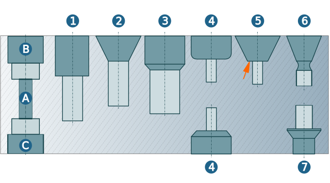

Generic Hole
Generic holes are universally applicable, from Simple Holes through to complex stepped holes. Generic holes are structured according to manufacturing elements and related properties.
Generic Holes were developed to replace in the medium term the Simple Hole, Sink Hole and Free defined Hole features.
Note
Generic Holes offer significant advantages when using macro machining. In particular, when setting up a macro database with macro rules, OPEN MIND recommends exclusive use of Generic Holes.
Macro databases created using previous hole features do not support the new Generic Holes. The previous hole features are still supported as an option under Feature Mapping.
Geometric data from the Generic Pocket feature can be used for the 2D, 3D and drilling cycles in the job definition.
A generic hole can contain grooves (A), sinks (B) and back sinks (C). A distinction is made between the following basic sink types: Counterbore (1), countersink (2), drill (3), form sink (4), tapered sink (5), torus (6) and undercut (7).
|  |
The following parameters can be defined for a groove:
Offset (1), Diameter (2), Depth (3), Tolerance - Upper allowance (4), Tolerance - Lower allowance (5):
 |
The following edge type can be used for holes and as a transition between sinks or between holes and sinks: Fillet (1), Sharp (2), Chamfer (3). The holes and sinks can feature threads (4), ISO fits (5) or spots (6).
 |
The following parameters can be defined for threads:
Designation: Select the designation from the list. Assign a name under User-defined. This designation is applied to the feature name: Feature name<thread designation>. Diameter (1), Length (2), Pitch (3).
The following parameters can be defined for ISO fits:
Fit value: Select the fit value from the list. Upper allowance (4), Lower allowance (5) and Length (6).
The following parameters can be defined for spots:
Top spot depth (7), Bottom spot depth (8).
 |
You can also define the ISO fit parameters using an XML file. This is done by evaluating the omISOFitCatalog.xml file located in the global working space C:\Users\Public\Documents\OPEN MIND\USERS\featTech\. You can define the following
parameters:
-
Type, Designation,
-
Diameter_Min, Diameter_Max,
-
Tolerance_Min, Tolerance_Max,
Example:
<ISOFit_Catalogs> <ISOFit_Catalog Name="ISOFit|ISO_Fit" Loc_Filename="hmFTMain.loc" <!-- ISO Fit Defintion A9--> <ISOFit_Definition Type="Hole|Hole" Designation="A9"> <ISOFit_Attribute Diameter_Min="1" Diameter_Max="3" Tolerance_Min="270" Tolerance_Max="295"><1-3></ISOFit_Attribute> .... <!-- ISO Fit Defintion J8--> <ISOFit_Definition Type="Hole|Hole" Designation="J8"> <ISOFit_Attribute Diameter_Min="1" Diameter_Max="3" Tolerance_Min="-8" Tolerance_Max="6"><1-3>/ISOFit_Attribute> .... </ISOFit_Catalogs>
The bottom type of the generic hole can be defined as: Through (A), Flat (B), Tip (C), Through hidden (D) and Ball-shaped (E). The following parameters may also be defined for the generic hole:
Bottom offset(1): Extends the hole by the specified measure.
Preferred machining direction: Specifies the preferred direction for machining the Generic Hole.
Tip angle: (2) Defines the shape of the tip of the hole .
Bottom radius: (3) Defines the shape of the end of the hole.
 |